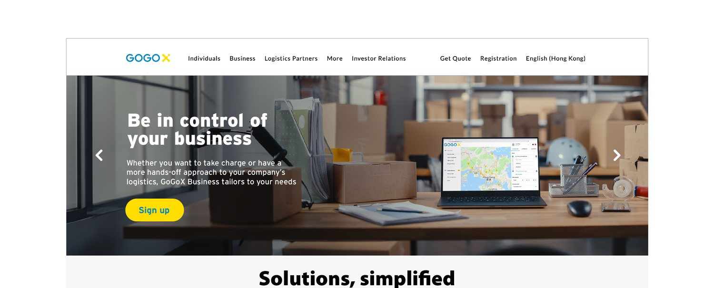
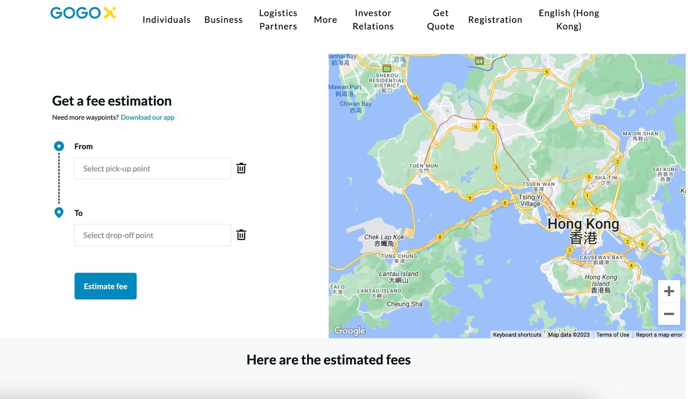
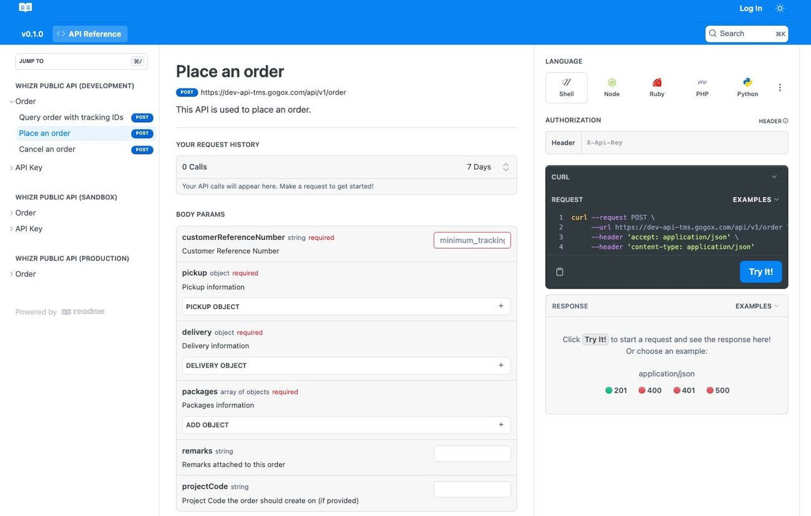

Product, design
How our product team works today, and how AI agents are changing the job.
Leslie Lai Product Director, GoGoX
One marketplace, many front doors.
On-demand intra-city logistics, mostly vans. Founded in Hong Kong in 2013.
matched in seconds
Chat and voice WhatsApp bot, voicebot
5.5-tonne trucks
9-tonne trucks
Couriers
New bets
My route
From economics student to Product Director.
Ten products. One design team.
Real screens from our live products. Click any screen to zoom in.
Apps Web and enterprise
Client app Consumers and SMEs GoGoMoving Home and office moves Driver app Van and truck drivers Amigo taxi Passengers Amigo driver Taxi drivers TMS driver app Enterprise fleets
TMS admin portal Enterprise operations Track and trace Enterprise customers Route planning Dispatchers gogox.com / business

GoGoX Business SMEs and corporates gogox.com / estimate

gogox.com Everyone api docs / place an order

Public API docs Developers
01
How we're built
The team, our themes, and the number we steer by
Team Ways of working Design AI
Nine people. Two crafts. One team.
Product management and product design sit together, under one director.
Product director Strategy, operating model, AI platform
Client app and web Consumer app, Business web, Moving
Enterprise and drivers Enterprise platform, driver app
AI chatbots WhatsApp, web chat, voice
Amigo taxi Passenger, driver and admin apps
Design lead Amigo, web chat, gogox.com
Product designer Client app, Business, Moving
Designer + product owner Drivers and enterprise
Designer + product owner Design system and research
Beside us in every theme
We organise around users, not features.
Each theme is a small squad with its own board, backlog and North Star.
Client experience
Business experience
Partner experience
Enterprise platform
AI integration
Amigo taxi
Serves
Consumers
SMEs and corporate accounts
Drivers
Enterprise clients
Customers on chat and voice
Passengers and taxi drivers
Builds
Client app, booking flow, Moving web
GoGoX Business web portal
Driver app, onboarding, earnings
TMS and API integrations
WhatsApp bot, voicebot, web chat
Passenger, driver and admin apps
North Star
Works with
CS, Ops, Moving
Sales, CS
Driver operations
Enterprise sales
CS, Moving staff
Amigo operations
Every theme
one board, two-week sprints
Every theme ladders up to one number.
Weekly completed orders
supported by funnel conversion, satisfaction and lifetime value
Client experience Orders and completion rate
Business experience Business GTV and active accounts
Partner experience Matched orders that complete
Enterprise platform Share of orders via API
AI integration Chatbot orders per week
Amigo taxi Trip fill rate
02
How we work
Two crafts, many partners, every channel, one delivery route
Team Ways of working Design AI
PM owns the why. Design owns the how.
Both of us own the outcome, from the first idea to the results after launch.
Discover
Define
Develop
Deliver
The right problem
The right solution
Problem and metric
PRD and priority
Trade-offs
Launch and readout
Research
Flows
Prototypes and UI
Design QA
We sit between the business and the builders.
Needs, requests, feedback
PRD + prototype, priorities
Estimates, questions, builds
Launches, readouts, training
Business
Tech
We listen on every channel.
Customers, drivers and the business all feed one triage.
Triage cluster, size, decide
Quick fix Into the next sprint
Not now Logged with a reason
From request to release.
One shared route, on every theme board.
Shape
Plan
Build
Ship
Open In progress Code review Ready for QA QA in progress Closed
03
Design at GoGoX
Our products, how we research, and one design system
Team Ways of working Design AI
Embedded in products. United by one system.
Design lead + design manager
Amigo taxi Web live chat gogox.com
Product designer
Client app GoGoX Business GoGoMoving
Designer + product owner
Driver app Enterprise TMS
Designer + product owner
Design system Research Prototypes
One shared system
We meet users where they are.
客戶 商戶 司機
Home visit 家訪 PM Designer 設計師 Consumer 客戶
Notes become insights.
Wall By user By theme
客戶 商戶 司機 ★ From our interviews 訪談
Judgment: what we act on, and what we park.
We weigh how many users, how much it hurts, and how sure we are.
How many users hit it
How much it hurts users and the business
Do now
Plan
Quick win
Park
Bubble size: how many sources agree
Four tests before we commit
A pattern, not a story. Two or more sources agree.
Say vs do. Behaviour data matches what we heard.
Moves a North Star. Orders, activation or repeat use.
Testable small. Prototype first, then a staged release.
PM and design, side by side on one feature.
Design tokens: decide once, use everywhere.
Primitives
Semantic tokens
Components
Screen
blue-500 #0088BF
blue-700 #006E9B
yellow-400 #FFDD00
navy-900 #00121A
grey-50 #F3F7F8
grey-200 #E3E7EC
red-500 #D9534F
8 12 16 pill
action / primary
action / pressed
selected / border
text / default
surface / subtle
border / default
status / error
radius / button pill
尊尚貨Van +$20 Chip
下一步 Button
Change a token. Every screen follows.
Theme
GoGoX Amigo Dark
Language
EN 繁中
Semantic tokens
action / primary #0088BF
selected / border #FFDD00
surface / default #FFFFFF
surface / subtle #F3F7F8
text / default #00121A
radius / card 16 px
copy / locale Aa en-HK
In production
GoGoX client app Amigo taxi
04
AI changes the job
From assistants to agents, and what that does to our roles
Team Ways of working Design AI
From AI that assists to AI that acts.
1 Assist
AI answers when asked.
2 Augment
AI drafts. You edit.
3 Automate
We design the steps. AI does part of the work.
4 Agent
Give it a goal, tools and limits. It picks the next step.
We are here Self-rated: 70% augmented,
Automation follows our steps.
AI automation We design the steps. AI fills in part.
Example: triage sweep
Fixed schedule, steps, output
AI decides the proposed values
AI agent We set the goal, tools and limits. AI picks the path.
Example: chatbot bug fixing
Fixed goal, tools, limits, tests
AI decides what to read, the cause, the fix, when to retry
Every 2 hours Check queues Propose fields PM verdict
Bug report
Read chats
Read logs
Find cause
Write fix
Run tests
Prove live
Owner publishes
The lines between PM, design
Before Now
handoff handoff
handoff handoff
Product builders
Data pulls the numbers agent
Designers fix UI bugs in code. Devs review the PR.
Designers run gogox.com without a web developer.
Designers act as product owners for two areas.
A PM built and shipped a WeChat mini program.
PMs query the data themselves, with analyst agents.
Agents test every ticket. QA signs off high-risk.
An agent at every stop.
Always human: priorities, promises, prices, and go or no-go.
Autonomy levels, borrowed from self-driving cars.
Most of our work runs at L2–L3. A few agents drive alone, inside a fenced zone.
L0 No automation
In product Specs, tickets and QA, all by hand
80 L1 Driver assistance
In product Copy and translation suggestions
L2 Partial automation
In product PRD drafts, design options, metric queries
Take over? L3 Conditional automation
In product Triage, ticket agent, design QA
L4 High automation
In product Chatbot fix loop, Amigo decision and test agents
Most of our work
A few agents
Fenced zone = our guardrails
W1 W2 W3 W4
Earned, not given. An agent moves up a level after 4 weeks at 95%+ accepted, and drops back after one serious error.
Levels adapted from SAE J3016
Example 1 of 2
Book a van in one WhatsApp chat.
叫車 查單 轉人工
Customer wants —
Illustrative chat
Example 1 of 2
What runs behind the chat.
叫車 查單 轉人工
Example 1 of 2
The chatbot that finds its own bugs.
Read every chat about 2,000 a week
Find the problem
Write and test the fix
Prove it on live orders
Lock it with a test
PM publishes
469 tests and counting
Time to fix a bot problem
0 1 wk 2 wks 3 wks 4 wks
One real day
Morning Bot placed an order without showing a summary first
Noon Fix written and tested
Evening Proven on that evening's orders
After Locked with a test, for good
Example 2 of 2 Agents working with agents.
Amigo taxi: a dev agent asks, a PM agent decides, a test agent checks.
PM decision agent 4 working hours, targetDev agent This needs a PM decision: option A or B?
PM agent Decision: option A. Posted with the checklist result.
Illustrative ticket
End-to-end test agent
1 Acceptance criteria to test steps2 Runs on test builds, twice3 Evidence captured4 Verdict written to the ticket
Ready for QA Trip history filter
Ready for QA, high risk Payment flow change
Target: 80%+ of tickets get a verdict within one working day
Does an AI world
Agents can already draft, design, code, test and analyse.
Yes.
The job moves from making to deciding.
Taste Agents make a hundred options. We know which one is right.
The right problem Choosing what to build, and what not to build.
Customer truth Time with drivers, shops and CS. Context no model has.
Accountability Someone owns the promise, the price and the go or no-go.
Running the agents Goals, guardrails and evals. We manage the system.
Same brief. Two apps.
Brief: let Hong Kong SMEs book a van. Left: an illustrative agents-only app. Right: our real client app flow.
+ PM + PD
GoGoX colours, but buzzword copy and nothing stands out.
30+ features crammed on the home screen. Nothing comes first.
14 fields before a price. Sizes in cm, no 6 ft rule, English only.
No price until the end, then “final price may vary”.
Upsell pop-ups at every step. It was told to grow basket size.
Taste
The right problem
Customer truth
Accountability
Running the agents
+
Same agents.
Our real app: three clear services, 叫車, 速遞, 搬屋.
One job per screen: set the route, then 下一步.
Hong Kong’s fleet and units: courier to 9-tonne, sizes in 呎.
A price on every option, cargo cover tiers, $90 estimate first.
Tuned to completed orders: extras stay optional, no pop-ups.
Fast to build. Hard to use.
Fast to build. Easy to trust.
Humans set the goal.
Agents do the legwork.
Humans keep the judgment.
Thank you Leslie Lai, Product Director, GoGoX